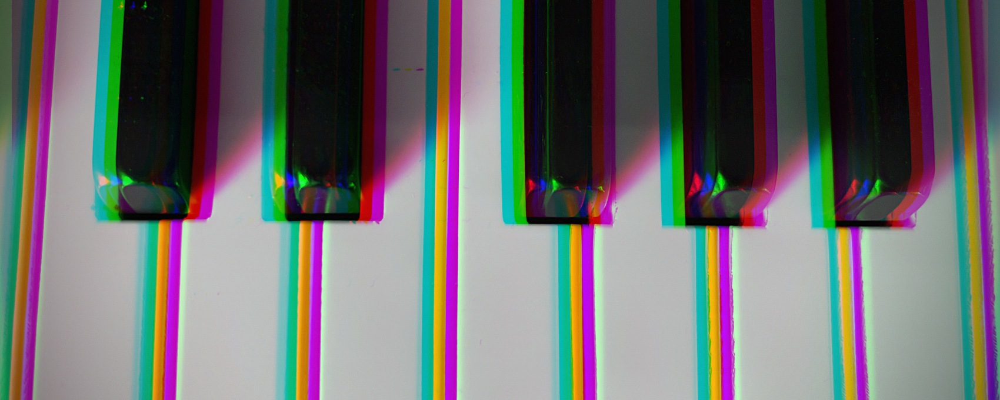

Ravenel, Nilpotence and periodicity in stable homotopy theory (Orange book),
Barthel-Beaudry, Chromatic structures in stable homotopy theory (BB),
Ravenel, Complex cobordism and stable homotopy groups of spheres (Green book).
Meeting information: Wednesday, 10-11am. Room 113 English Building.
Schedule of speakers
Week 0 (1/18). Vesna Stojanoska: Introduction and overview. (video)
Week 1 (1/25). Matthew Niemiro: Review of some homotopy theory. (video, notes)
Week 2 (2/1). Dinglong Wang: Formal group laws and formal groups. (video, slides)
Week 3 (2/8). Garrett Credi: MU-theory. (video, notes)
Week 4 (2/15). Yigal Kamel: BP-theory and the Adams spectral sequence. (video, notes)
Week 5 (2/22). Connor Grady: Thick subcategories, the Landweber exact functor theorem, and Morava K-theories. (notes)
Week 6 (3/1). Yigal Kamel: Morava's orbit picture and Morava stabilizer groups. (video, notes)
Week 7 (3/8). Yigal Kamel: K(1)-local homotopy theory. (video, notes)
Spring break
Paul Goerss conference
Week 8 (3/29). Garrett Credi: The periodicity theorem. (video, notes)
Week 9 (4/5). Gabrielle Li: Bousfield localization and equivalence. (video, notes)
Week 10 (4/12). [Canceled] Localization, smash product, and chromatic convergence theorems.
Week 11 (4/19). Langwen Hui: The nilpotence theorem. (video, notes)
Week 12 (4/26). Doron Grossman-Naples: The chromatic fracture square: disassembly and reassembly. (video, notes)
Week 13 (5/10). Venkata Sai Narayana Bavisetty: Resolutions of the K(n)-local sphere.